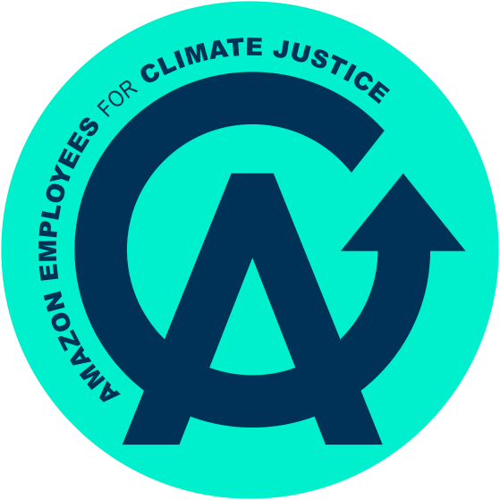
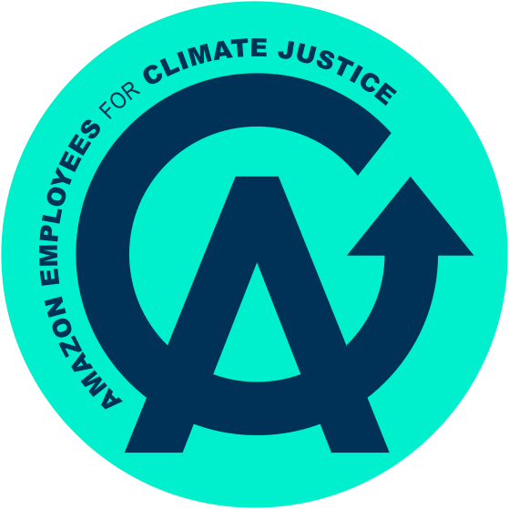

Over the past several months, Amazon has planned to lay off nearly 30,000 corporate workers, invested an additional $100,000 million in generative AI to replace those workers, and restricted their employee’s ability to communicate with one another. All of these anti-labor moves have been made to prop up the company’s reckless and unsustainable roll out of AI. Amazon workers are sounding the alarm about this technology's catastrophic impact on climate change, working conditions, and the health of our democracy, but they need our help.
Amazon corporate workers have written an open letter to their CEO highlighting their concerns regarding Amazon's dangerously half-baked AI development and the more of their colleagues who sign on, the more powerful their collective voice becomes.
With pre-Thanksgiving deals, Black Friday, and the winter holidays all approaching, Amazon depends on our business, our likeness, and our advertisement to push their marketing further. In order to uplift their demands, we as content creators (with a collective following of over 15 million) refuse to allow Amazon to use us and our platforms to prioritize profit over people with their harmful AI development.
As you know, the holidays are the time that retailers thrive. Last year alone, Amazon made over $10 billion from Black Friday and Cyber Monday transactions, incentivizing them to do whatever it takes to keep raising profits: firing workers, increasing damaging AI use, and engaging in union-busting tactics. This is why we need a collective voice to ensure we put our money where our mouth is.
Because Amazon depends on our voices to advertise their holiday deals, and because Amazon has significantly restricted the channels of communications workers can use to communicate internally about the injustices they are facing, we need to step in. AECJ is asking creators to help raise awareness by posting about the open letter and signing the pledge to not work with Amazon.
By pledging not to work with Amazon, you uplift Amazon workers’ common sense demands, decrease environmental damage, and hold a capitalistic giant accountable.


In alignment with Trump’s AI plan, tech companies including Amazon are collaborating in their push for the deregulation of the tech industry and the dismantling of environmental protections, leaving CEOs like Andy Jassy eager to accept authoritarianism to push their bottom line.


The IPCC estimates that we only have until 20230 to cut global emissions nearly in half, but Amazon is spending this time massively increasing emissions in pursuit of AI dominance. In fact, there are $200 billion worth of data center projects being built in the South, and Amazon alone has 81 data centers. With 40% of data centers located in high water stressed areas, residents are left rationing their water intake.
Researchers estimate that by 2028, energy use will generate the same emissions as driving over 300 billion miles – or over 1,600 round trips to the sun from earth. It is more clear than ever that the war for energy and water is here, and tech companies are staking their water claims at the expense of local communities.


Amazon’s current AI push is devastating for workers. Layoffs will cause thousands of people to lose livelihoods and thousands more still employed folk to take on the responsibility of multiple people on tighter timelines. Even in tech-friendly California, 55% of respondents said they were more concerned than excited by AI. So Amazon employees are fighting for safeguards: slowing the race for AI dominance, demanding real input, and sounding the alarm for accountability.


These moves by Amazon are not made in a vacuum. Tech barons like the leaders at Amazon have lined up to support the regime financially and to curry favor with Trump personally. Amazon donated $1 million to Trump’s inauguration, has rolled back on DEI commitments, and has sponsored Trump’s birthday celebrations.
So it is no surprise that AI, as these same tech CEOs are currently developing it, is being used to support authoritarianism. Amazon is working with Palantir to bring AI to the Defense Department and has openly supported bans on AI regulation. We have to stand firm and make public moves now to stop this shift.


It is extremely important that you take action today:
1. Sharing this letter far and wide
2. Talk about this AI moment in your own circles
3. MOST IMPORTANTLY, if you know someone who works in tech (especially if they work at Amazon) ask them to read the open letter and to sign it.
It will take time, energy, our loud voices, and courage, but we have the power to make change.
 
